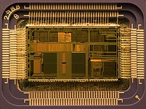
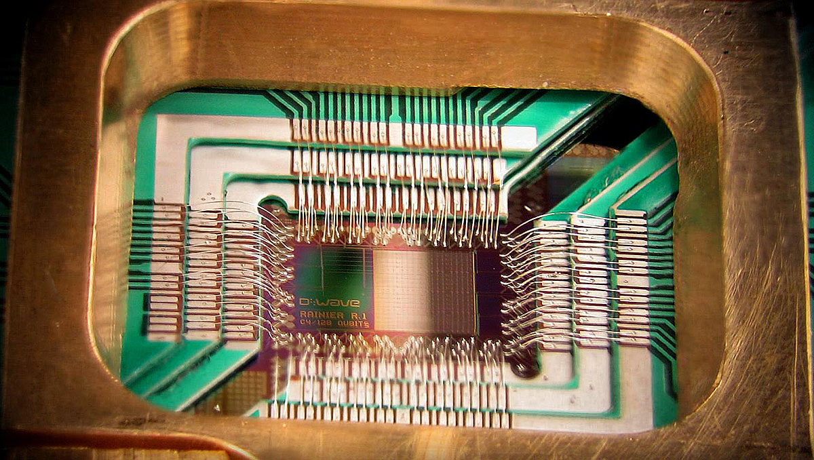
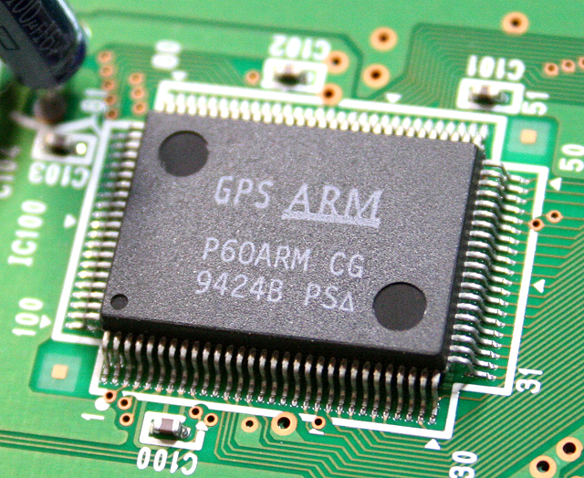

Un microprocesseur qu'est ce que c'est?
Un microprocesseur, c’est une petite puce électronique qu’on appelle aussi le cerveau de l’ordinateur.
- Il reçoit des infos.
- Il les traite (fait des calculs, des décisions).
- Il envoie des ordres aux autres parties de l’appareil (mémoire, écran, clavier…).
- On en trouve dans les ordinateurs, mais aussi dans les téléphones, consoles de jeux, voitures ou même certains appareils électroménagers.
Sans microprocesseur, un appareil ne pourrait rien faire.
Leur histoire
Le microprocesseur est une invention qui a révolutionné l’informatique et notre quotidien. Voici son histoire en quelques étapes simples :
- Avant 1970 : Les ordinateurs étaient énormes et remplis de circuits séparés (très chers et encombrants).
- 1971 : Intel invente le premier microprocesseur, le Intel 4004, qui regroupe tout en une seule puce.
- Années 1970-1980 : Les microprocesseurs deviennent plus puissants → naissance des premiers ordinateurs personnels.
- Années 1990-2000 : Ils gagnent en vitesse et en efficacité → développement d’Internet, des jeux vidéo et des téléphones portables.
Aujourd’hui : Ils sont partout : ordinateurs, smartphones, voitures, montres connectées… avec des milliards de transistors miniaturisés.
Les différentes familles
Les microprocesseurs se déclinent en plusieurs familles, chacune avec ses caractéristiques et usages :
- Intel : séries 4004, 8086, Pentium, Core i
- AMD : Athlon, Ryzen, EPYC
- ARM : utilisés dans la majorité des smartphones et tablettes
- Motorola : 68000, utilisé dans les premiers Macintosh et certaines consoles de jeux
- MIPS : souvent utilisés dans l’embarqué et certaines consoles
- PowerPC : anciennement dans les Macintosh et encore dans certains systèmes industriels
Utilisation
Les microprocesseurs sont utilisés dans de nombreux domaines et appareils du quotidien :
- Ordinateurs : pour exécuter les programmes et gérer les périphériques
- Smartphones et tablettes : pour faire tourner les applications et le système
- Consoles de jeux : pour gérer les graphismes, le son et les interactions
- Voitures : pour les systèmes embarqués comme l’ABS, l’injection et la navigation
- Électroménager : dans les micro-ondes, lave-linge, réfrigérateurs intelligents
- Équipements industriels : robots, machines automatisées, systèmes de contrôle
- Objets connectés : montres, assistants vocaux, domotique
Images

L'intérieur d'un Intel 80486DX2.

Un CPU quantique D-Wave

Microprocesseur ARM60.